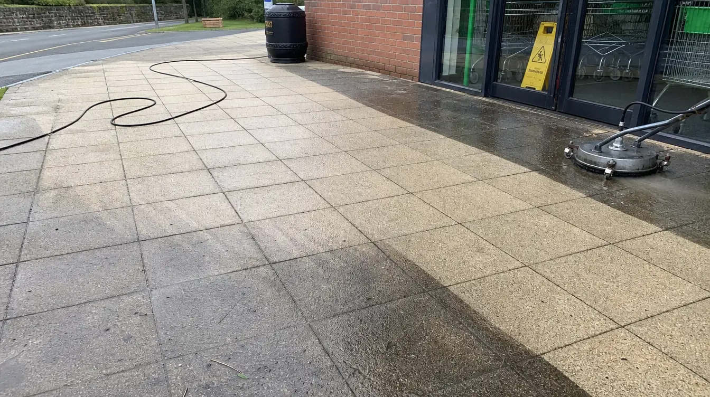
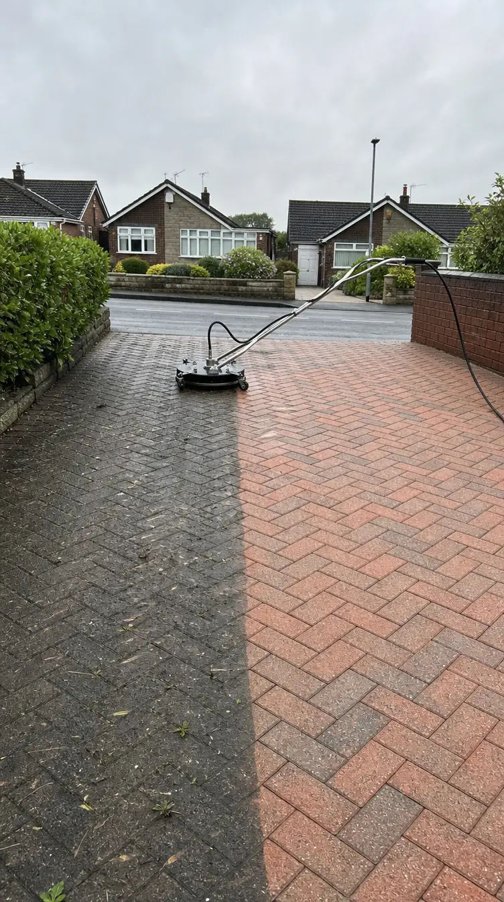
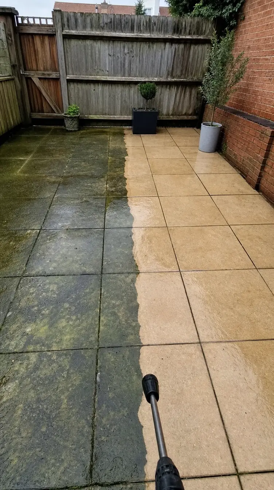

Gallery
Pressure washing gallery
Driveways, patios, paths, decking, guttering and commercial areas. Current Ant’s Jets assets are shown first, followed by clearly labelled illustrative examples while we collect more verified customer photos.
Current Ant’s Jets assets
Existing cleaning photos
These are the existing Ant’s Jets images currently available. As Ant sends more real job photos, this section becomes the main customer proof gallery.


Illustrative transformations
Driveways, patios and paths
These are illustrative examples for the website and ad testing, not verified customer jobs. The aim is to show the kind of clean, satisfying transformation people want before they send photos for a quote.




Luxury home examples
Large Surrey-style driveways and Indian sandstone patios
These newer illustrative visuals are aimed at higher-value driveway and patio enquiries: larger £2–3m-style UK homes, drone-style angles, and a much stronger contrast between grimy before and bright, dry, high-spec after.


Facebook ad creative
Vertical images for Meta ads
These are the two vertical creatives prepared for Facebook and Instagram placements. They are also shown here so every shared asset is visible on the website.


Ad angle
Send photos for a quick quote
Driveway or patio looking tired? Send Ant’s Jets a few photos and we’ll come back with a straightforward local quote.
- Local to Godalming, Guildford and nearby areas.
- Lead with visual proof, then ask for photos.
- Track every ad lead with UTMs and GHL attribution.
Video examples
Short reveal clips for the website and ads
These draft AI clips are useful for motion testing on the website and Meta ads. Sean flagged that the close-up block paving video still needs the clean side to look spotless, so it should be treated as a draft until we regenerate or replace it with real footage.
Want a quick price?
Send photos of your driveway, patio, path or exterior surface and we’ll come back with a straightforward quote.
Get a free quote